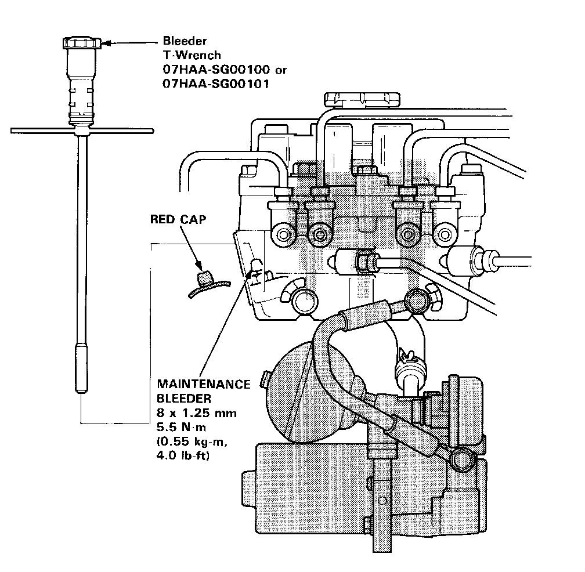

Relieving Accumulator/Line Pressure

Relieving Accumulator/Line Pressure
Warning
Use the Bleeder T-wrench before disassembling the parts shaded in the illustration.
1. Open the hood.
2. Remove the red cap from the bleeder on the modulator unit.
3. Install the special tool on the bleeder screw and turn it out slowly 90° to collect high-pressure fluid into the reservoir. Turn the special tool out one complete turn to drain the brake fluid thoroughly.
4. Retighten the bleeder screw and discard the fluid.
5. Reinstall the red cap.
Reservoir Brake Fluid Draining
1. Draining brake fluid from modulator reservoir:
The brake fluid may be sucked out through the top of the modulator tank with a syringe. It may also be drained through the pump joint after disconnecting the pump hose.
2. Draining brake fluid from master cylinder:
Loosen the bleed screw and pump the brake pedal to drain the brake fluid from the master cylinder.
Warning
- High-pressure fluid will squirt out if the shaded tube is removed or the modulator head 8 mm and 10 mm bolts are loosened.